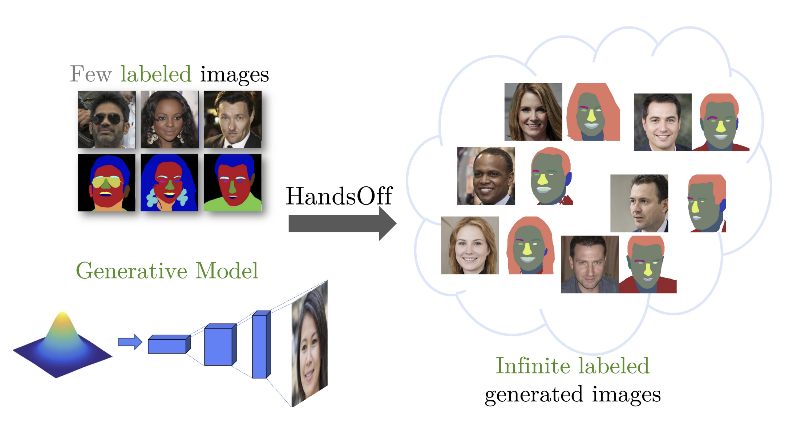
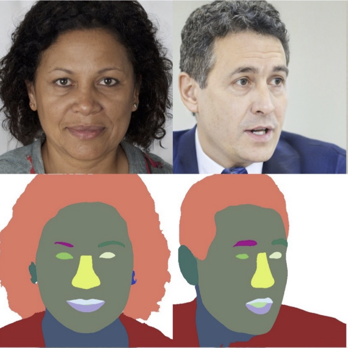

|
Mariya I. Vasileva My name is Mariya, and I'm interested in all things computer vision, generative models, video analysis and understanding, and ethics of AI systems at scale. I spent a number of years in industry research and worked on a range of problems, from image and video generative models, to visual recommender engines, to 2D-to-3D human body shape and pose modelling, to synthetic data generation for efficient training of foundation models at scale, to fairness and explainability of AI systems. I obtained my PhD in Computer Science from the University of Illinois at Urbana-Champaign under the advisorship of professor David A. Forsyth, where I researched problems in vision and language, visual search and retrieval, and applications of computer vision in the fashion domain. |

|
ResearchMy experience lies at the crossover between generative models, multimodal learning, vision and language, foundation models, safety and alignment. |
|


|
HandsOff: Labeled Dataset Generation with No Additional Human Annotations
Austin Xu, Mariya I. Vasileva, Achal Dave, Arjun Seshadri CVPR, 2023 project page / code / arXiv HandsOff is a framework capable of producing synthetic images with corresponding pixel-level labels without requiring additional human annotations. HandsOff utilizes a small number of real labeled images and exploits the rich latent representations of GANs to train an effectively infinite label generator. |